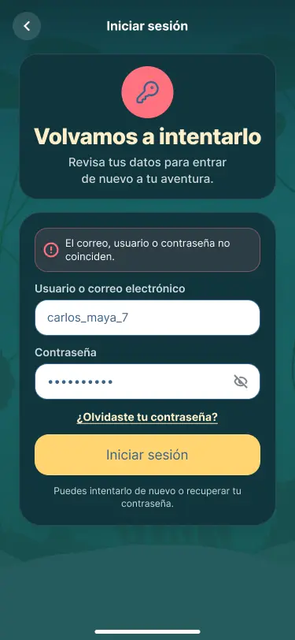
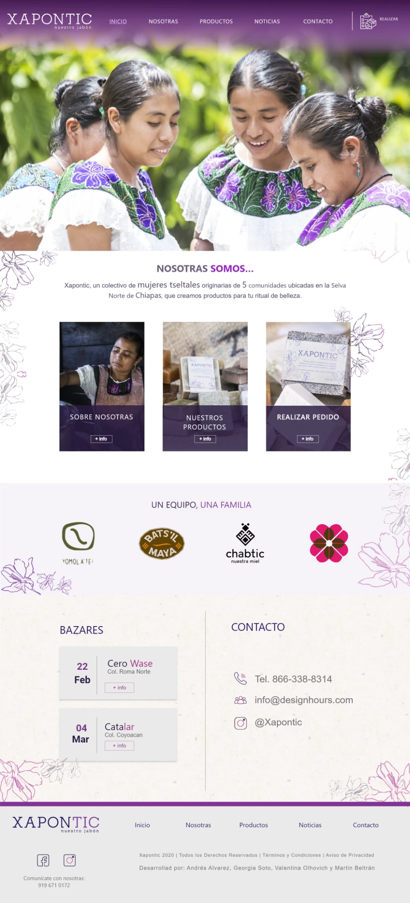
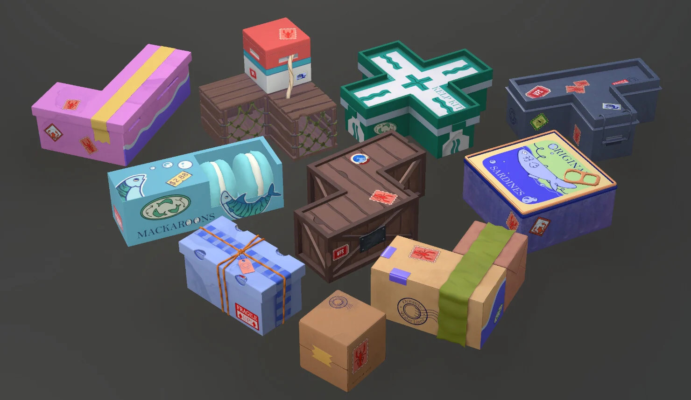

Proyectos
Yoolmi y Xapontic encabezan mi trabajo en productos digitales. Después, explora cómo aplico interacción, pruebas y producción a videojuegos y 3D.



Yoolmi
Diseñar un primer acercamiento a LSM: interfaces actuales, flujos de aprendizaje e investigación sobre a quién debe servir el producto.

Xapontic
Conectar la historia de una empresa social con la exploración de productos y los pedidos. Proyecto académico con cliente real: arquitectura, UI responsiva y desarrollo front-end.

Lobster Loader
Un puzzle 3D de seis meses moldeado con playtests. Simplificamos controles, aclaramos la puntuación y seguimos sumando feedback hasta que las interacciones se sintieran bien.

Monster Route
Un tema visual de señalamientos llevado a conceptos de menú, distribución del HUD y cuatro estados de resultados.

3D y producción seleccionados
Modelado listo para juego, estudios de materiales y trabajo hard-surface. Es trabajo complementario, pero enseña qué tan cómodo me siento dentro de un pipeline de producción.
Juega mis proyectos
Builds jugables y proyectos más pequeños que se entienden mejor jugando que explicándolos de más.
Todavía no hay proyectos en esta categoría.